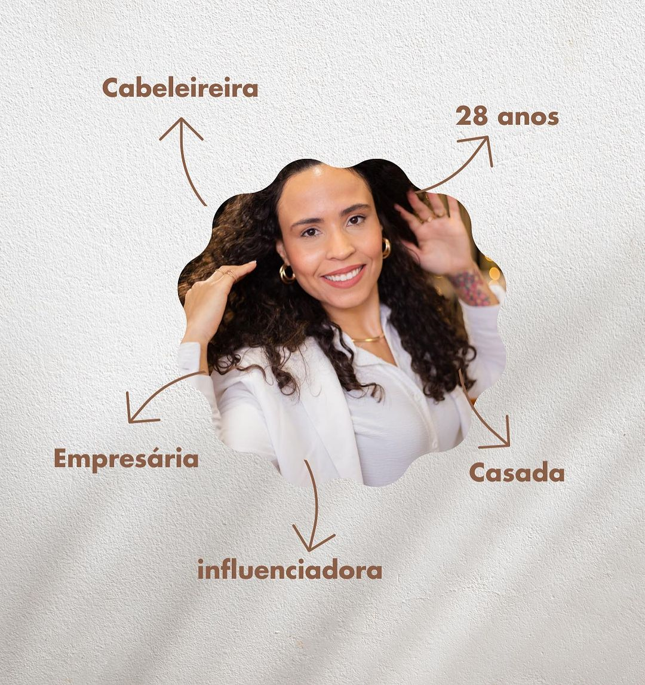
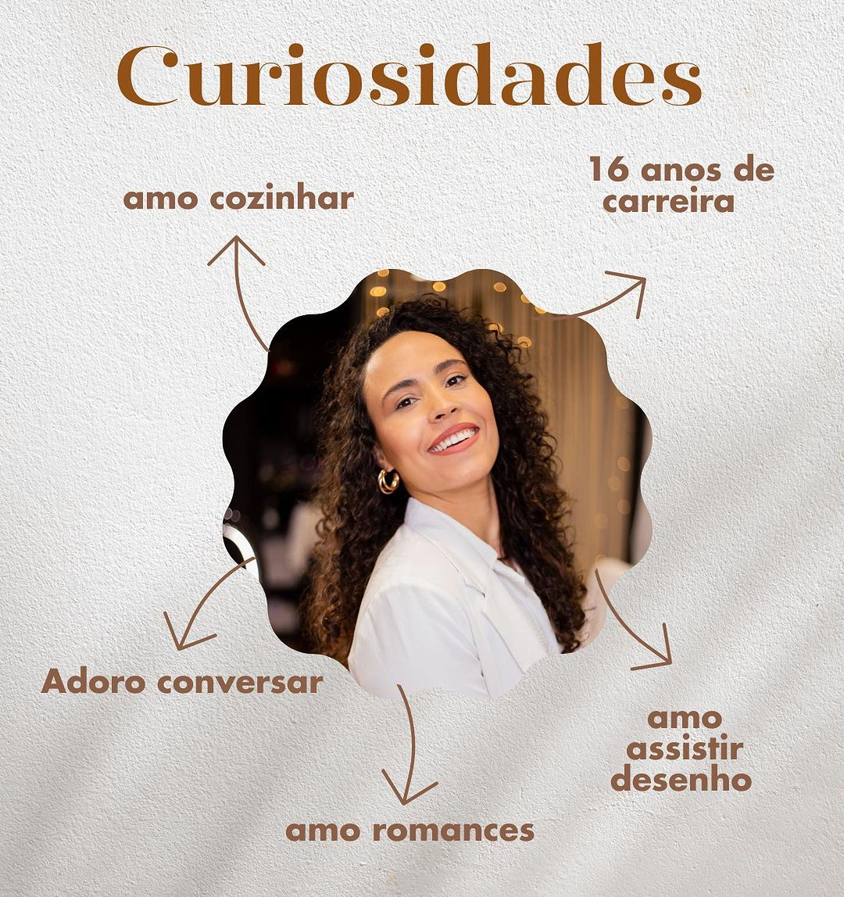
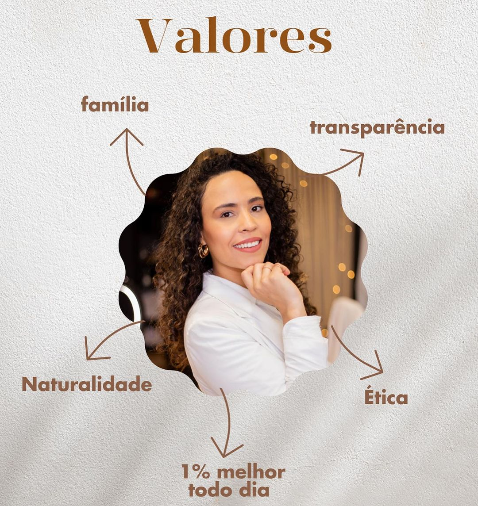

Olá, queridos visitantes! Eu sou a Paloma, uma apaixonada pelo universo capilar com mais de uma década de experiência dedicada a fazer a magia acontecer nos cabelos das pessoas. Ao longo desses anos, desenvolvi uma profunda paixão por transformar não apenas os fios, mas também a autoestima e confiança de cada cliente que passa pela minha cadeira. Agora, estou empolgada em compartilhar não apenas minhas habilidades de cabeleireira, mas também toda a bagagem que acumulei ao longo dessa jornada. Decidi dar um passo além e me tornar uma educadora, transmitindo meu conhecimento para outros profissionais e entusiastas da beleza que desejam aprimorar suas habilidades.